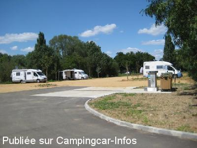
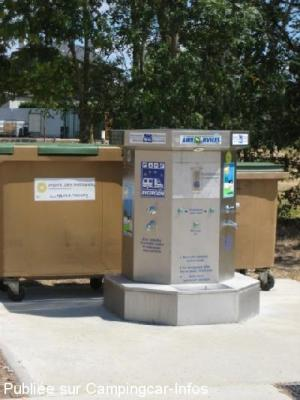
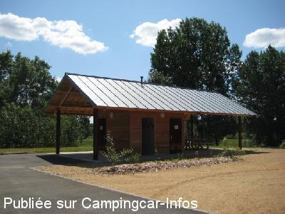
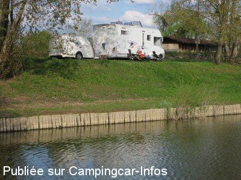
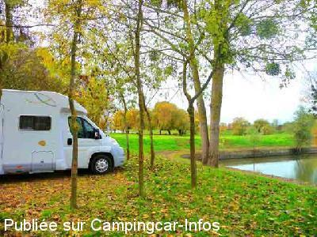

ASN = Aire de services avec stationnement nuit possible de :
BRIOLLAY
(N° 484)
Accès/adresse :
Route de Tierce, D52
49125 BRIOLLAY
49125 BRIOLLAY
Latitude : (Nord) 47.56762° Décimaux ou 47° 34′ 3′′
Longitude : (Ouest) -0.50721° Décimaux ou 0° 30′ 25′′
Tarif : 2015
Services : 2 €
Jetons dans les commerces proches
Type de borne : AIRESERVICES
Services :


Autres informations :
Ouverte toute l'année
10 emplacements
Attention en période de crues, la Sarthe arrive au niveau de l'aire
Tel : +33(0)241 421 684
http://www.tourisme.fr/office-de-tourisme/briollay.htm

Le 07/07/2011 par Mike

Le 07/07/2011 par Mike

Le 07/07/2011 par Mike

Le 04/12/2010 par SBH

Le 08/11/2010 par jyreguer
de
Manou0606
le 21/10/2015 :
tres belle aire de passage le 30 septembre 2015 bord de l'eau toilettes impeccables, calme et tres bien entretenue, gratuite et agréable
tres belle aire de passage le 30 septembre 2015 bord de l'eau toilettes impeccables, calme et tres bien entretenue, gratuite et agréable
de
brigitte c
le 13/07/2015 :
Super aire, gratuite, reposante, commerces pas loin et des ballades a coté de la Sarthe, merci a la commune.
Super aire, gratuite, reposante, commerces pas loin et des ballades a coté de la Sarthe, merci a la commune.
de
Anlo
le 23/09/2014 :
Arrivée le 14/09/2014 sur cette Aire calme et bien entretenue à proximité de la Sarthe. Petite Superette et commerces à deux pas . Attention pour ceux qui possède une parabole pas de réception prés des arbres sur le coté de la borne face à la route principale.
Arrivée le 14/09/2014 sur cette Aire calme et bien entretenue à proximité de la Sarthe. Petite Superette et commerces à deux pas . Attention pour ceux qui possède une parabole pas de réception prés des arbres sur le coté de la borne face à la route principale.
de
Mitra
le 16/07/2014 :
De passage le 23/05/2014
Aire très agréable bien entretenue.
De passage le 23/05/2014
Aire très agréable bien entretenue.
de
Adagio/Marc
le 28/06/2012 :
Une aire très agréable et calme la nuit. Bel environnement et vastes emplacements stabilisés en terre battue un peu gadoue en cas de fortes pluies. Borne en panne ce 26/6/2012 mais devrait être réparée rapidement. Sol trop mou très dégradé par les camions des éboueurs.
Merci tout de même à la commune pour cette aire au demeurant gratuite.
Une aire très agréable et calme la nuit. Bel environnement et vastes emplacements stabilisés en terre battue un peu gadoue en cas de fortes pluies. Borne en panne ce 26/6/2012 mais devrait être réparée rapidement. Sol trop mou très dégradé par les camions des éboueurs.
Merci tout de même à la commune pour cette aire au demeurant gratuite.
de
bruno81
le 28/05/2012 :
Très beau parking aménagé dans une région où de nombreux sites touristiques sont à voir. Merci à la commune.
Très beau parking aménagé dans une région où de nombreux sites touristiques sont à voir. Merci à la commune.
de
Monique et Charly 60
le 14/01/2012 :
Bravo à la municipalité, nous avons passés 4 jours sur cette aire très propre et très bien étudié à deux pas des commerces, avec de très belles ballades.
Les jetons pour l'eau sont en vente en face au garage.
Rien à dire de plus , bravo Mr Le Maire.
Monique et Charly 60
Bravo à la municipalité, nous avons passés 4 jours sur cette aire très propre et très bien étudié à deux pas des commerces, avec de très belles ballades.
Les jetons pour l'eau sont en vente en face au garage.
Rien à dire de plus , bravo Mr Le Maire.
Monique et Charly 60
de
jacques et rose blanche
le 25/11/2011 :
De passage a Briollay nous avons stationnnés sur cette aire les 9 et 10 08 2011. Aire impeccable,
un grand bravo a la municipalité
De passage a Briollay nous avons stationnnés sur cette aire les 9 et 10 08 2011. Aire impeccable,
un grand bravo a la municipalité
de
Gengembre
le 23/10/2011 :
06/10/11 - Confirme, aire très agréable. Remercie la Municipalité et ses habitants, nous permettant de passer un très bon séjour. FREDEY et MARIE FRANCE (62)
06/10/11 - Confirme, aire très agréable. Remercie la Municipalité et ses habitants, nous permettant de passer un très bon séjour. FREDEY et MARIE FRANCE (62)
de
Mike Protheroe
le 07/07/2011 :
§
Please note that this excellent aire has been updated recently not electricity) but now has free public toilets and services for 2 Euro (jeton). requiring the purchase of a token from the local shops. Next to the river and near the shops.
I stayed at this aire in July 2011.
§
Please note that this excellent aire has been updated recently not electricity) but now has free public toilets and services for 2 Euro (jeton). requiring the purchase of a token from the local shops. Next to the river and near the shops.
I stayed at this aire in July 2011.
de
samson
le 16/04/2011 :
Petite visite sympathique de monsieur le maire lors de notre séjour. je confirme les commentaires précédents, petite commune accueillante. Que du bonheur.
Petite visite sympathique de monsieur le maire lors de notre séjour. je confirme les commentaires précédents, petite commune accueillante. Que du bonheur.
de
SBH
le 04/12/2010 :
Une aire verdoyante et calme, proche d'un plan d'eau idéal pour amateur de pêche.
Une aire verdoyante et calme, proche d'un plan d'eau idéal pour amateur de pêche.
de
jy reguer
le 03/11/2010 :
Très joli emplacement, calme, au bord de l'eau et à deux pas du centre bourg. 4 places maximum. Nouveaux sanitaires et bloc services en voie d'achèvement, un peu à l'écart de l'aire, ce qui permettra, je pense, de gagner un peu de place. Merci à la municipalité de l'effort réservé à l'accueil des camping-caristes.
Très joli emplacement, calme, au bord de l'eau et à deux pas du centre bourg. 4 places maximum. Nouveaux sanitaires et bloc services en voie d'achèvement, un peu à l'écart de l'aire, ce qui permettra, je pense, de gagner un peu de place. Merci à la municipalité de l'effort réservé à l'accueil des camping-caristes.
de
Gagcbr
le 02/11/2009 :
Aire calme le long de la Sarthe, pas beaucoup de place mais seulement 2 CC ce week end, Boulangerie à 200m en suivant l'axe principal
Aire calme le long de la Sarthe, pas beaucoup de place mais seulement 2 CC ce week end, Boulangerie à 200m en suivant l'axe principal
de
Jean-Claude
le 04/07/2009 :
Nous avons opté pour cette halte gratuite plutôt que celle de Bouchemaine, payante. Très calme, au bord de la Sarthe et ses pêcheurs. Borne de service en fonctionnement. De très agréables ballades a pied ou en vélo a partir de cette aire, par contre, au village, les commerces sont un peu justes, mieux vaut faire ses courses avant d'y arriver.
Nous avons opté pour cette halte gratuite plutôt que celle de Bouchemaine, payante. Très calme, au bord de la Sarthe et ses pêcheurs. Borne de service en fonctionnement. De très agréables ballades a pied ou en vélo a partir de cette aire, par contre, au village, les commerces sont un peu justes, mieux vaut faire ses courses avant d'y arriver.